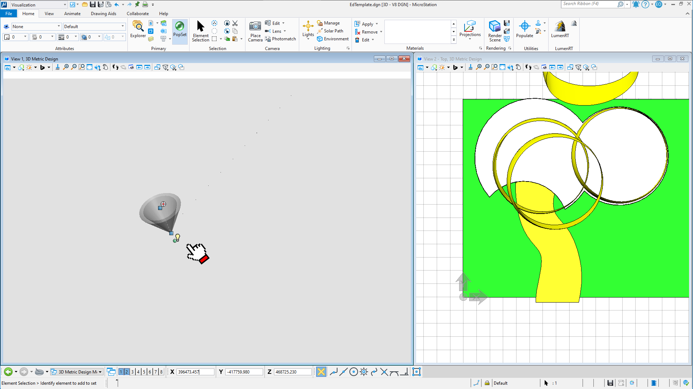

Troubleshooting Microstation File
What happened is when I clicked on fit view, it is suppose to zoom into to your building but instead it zoomed out very far until we barely notice the dots on the screen.
Notice that when I select the first dot, your building and models are not selected. That means there is some rogue element that may have been accidently created far away from your building. That is why in Lumen RT you cant see a thing because it has been zoomed out quite a distance away.
Only when I select the second last dot in the line of dots on the map, is your building selected.

The last object is some kind of light object which may have also been accidently created.
So what we do is we delete the light object and we select all the rogue dots you see on the screen except the dot that is actually your model building.
Then we delete all those rogue dots and only select the dot that is your building. You will see that when I select that dot, your models in the second window are selected.
Finally when I click "Fit View" in the first window, it will zoom in to your model which it is suppose to do.
Fixed Microstation File
I have fixed your file and you can download it here. Now you can open this file in Lumen RT and you should see your building.
Feel free to ask me if you have any questions.